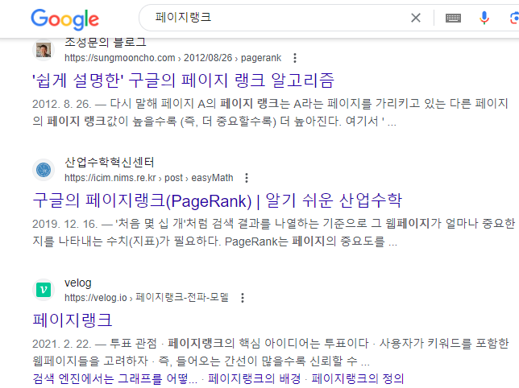

- 알고리즘이란?
- 위대한 알고리즘의 조건
- 검색엔진
- 페이지랭크

페이지랭크는 하이퍼 링크를 이용해 검색결과에 순위를 매겨 사용자에게 제시해주는 것이다.
예를 들어 스크램블 에그 레시피를 검색했을떄 두개의 검색결과가 있다고 가정해보다. 하나는 어니의
스크램블 에그 레시피이고 다른 하나는 버트의 스크램블 에그 레시피이다. 이때 어니의 레시피 웹페이지로
이어지는 하이퍼링크가 존재하는 웹페이지가 2개, 버트의 레시피 웹페이지로 이어지는 하이퍼링크가 존재하는
페이지가 1개라면 어니의 웹페이지의 순위를 더 높게 측정해 우선적으로 제시해주는 식이라고 볼 수 있다.
수만개의 검색결과 중 우리가 원하는 검색결과를 찾을 수 있는데는 이 페이지랭크가 큰 역할을 하고 있다.